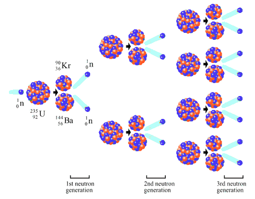

THe History of Nuclear Power
Nuclear power is the second – largest source of low carbon energy today
Nuclear energy matters because your future does
Learn about the History of Nuclear energy
1789
Uranium was discovered by the German pharmacist Martin Klaproth, during an experiment in which he was able to precipitate the oxide of the yet undiscovered element. Half a decade later, the first sample of Uranium was to be successfully isolated. This substance would later be a hallmark in the study of radioactivity.
1895
Wilhelm Röntgen encountered upon ionising radiation, by passing an electric current through an evacuated glass tube and producing continuous X-rays.

1896
Henri Becquerel discovered radioactivity while observing the fogging of photographic plates emanated by uranium-bearing blocks. His discovery made a formative stride in the perception of physical matter as it showed that the atom was divisible and able to change form while emitting energy.

1896
The term radioactivity was coined by Marie- and Pierre Curie after the term radiare Latin for “shining”. Their research on the penetrating rays in uranium and the discovery of radium launched an era of using the latter element for the treatment of cancer. Their exploration of this field could be seen as the first peaceful use of nuclear energy.
1902
In his early work the physicist Ernest Rutherford discovered the concept of radioactive half-life, and differentiated between alpha and beta radiation. He later went on to develop a fuller understanding of the atom and conducted the gold foil experiment, for which he is now most known for, thereby pioneering a model of the atom, that featured its nucleus.
1932
The subatomic particle the neutron, was discovered by James Chadwick as an evaluation of multiple experiments in which Beryllium was bombarded with alpha-particles, emitting an energetic stream of radiation. Consequentially, the basis of the modern understanding of the nucleus was formed.
1938
Fission, the process of splitting nuclei, was discovered by Otto Hahn and his assistant Fritz Strassmann during an experiment in which Barium was formed from Uranium. Austrian scientist Lise Meitner and her nephew Otto Frisch, working under Niels Bohr, then concluded from this experiment, that the neutron was captured by the nucleus, causing severe vibration leading to the nucleus splitting into two not quite equal parts. They calculated the energy release from this fission as about 200 million electron volts. This was the first experimental confirmation of Albert Einstein's paper putting forward the equivalence between mass and energy, which had been published in 1905. Fission is the key process to powering nuclear reactors to this day.
Read more
1941
Enrico Fermi developed the design for the first nuclear reactor in history. It consisted of uranium placed in a stack of graphite forming a cube-like frame of fissionable material. -ü.0lo
1942
Fermi and 48 of his colleagues established the ability of mankind to control the release of nuclear energy by arranging the first controlled nuclear chain reaction in the Chicago-Pile-1 reactor. The tremendous amounts of energy released by the decay reaction of low-enriched uranium were later converted into electrical energy
1945
The first widely distributed account of nuclear energy, the pocketbook The Atomic Age, was released. It discussed the peaceful use of nuclear energy and depicted a future where fossil fuels would go unused. Nobel laureate Glenn Seaborg, who later chaired the United States Atomic Energy Commission, is quoted as saying "there will be nuclear powered earth-to-moon shuttles, nuclear powered artificial hearts, plutonium heated swimming pools for SCUBA divers, and much more"
1951
Electricity was generated for the first time by a nuclear reactor, at the EBR I experimental station near Arco, Idaho, which initially produced about 100 kW.
1953
American President Dwight Eisenhower gave his "Atoms for Peace" speech at the United Nations, emphasizing the need to develop "peaceful" uses of nuclear power quickly. This was followed by the Atomic Energy Act of 1954 which allowed rapid declassification of U.S. reactor technology and encouraged development by the private sector.
1954
The USSR's Obninsk Nuclear Power Plant, became the world's first nuclear power plant to generate electricity for a power grid, producing around 5 megawatts of electric power.
1955
The BORAX III reactor, the prototype to later Boiling Water Reactors, became the first to generate electricity for an entire community, the town of Arco, Idaho.
1970-2020
Starting in the 1970s, anti-nuclear concerns related to nuclear accidents, nuclear proliferation, nuclear terrorism and radioactive waste disposal, sparked conversation surrounding the technology. Aggravated by the 1986 Chernobyl disaster, a tendency in the reduction of nuclear power plants occurred around the globe. Dispute around atomic energy drove a number of countries, including Austria, Sweden and Italy, to oppose the nuclear industry. On March 2011, the Fukushima Daiichi Nuclear Power Plant suffered three core meltdowns, following a tsunami off the coast of Japan. This accident sparked further investigation in the field of nuclear safety and prompted a re-examination of atomic energy policies. These considerations, concern both the scientific community and the public to this day.
Read moreFUTURE
The industry of energy supply is responsible for over a fourth of anthropogenic greenhouse gas
emissions and is therefore formative for the aggravation of the climate. Every year electricity generated through nuclear power saves our atmosphere from 528 million metric tons of carbon dioxide. Since the year 1995 the U.S. Nuclear Industry has thus prevented the emission of over 16 billion tons of Greenhouse gases. Nuclear power is predicted to reduce carbon emission by … if implemented to cover … percent of the total global energy generation.
Today, nuclear power is the second-largest source of low-carbon electricity, with 452 operating reactors providing 2700 TWh of electricity in 2018, or 10% of global electricity supply.
A further advantage of nuclear power plants is a reduced cost of produced energy per unit in comparison with that produced at coal, oil, or gas thermal power stations.
1970-2020
From the late 1970s to about 2002 the nuclear power industry suffered some decline and stagnation. Few new reactors were ordered, the number coming on line from mid 1980s little more than matched retirements, though capacity increased by nearly one third and output increased 60% due to capacity plus improved load factors. The share of nuclear in world electricity from mid 1980s was fairly constant at 16-17%. Many reactor orders from the 1970s were cancelled. The uranium price dropped accordingly, and also because of an increase in secondary supplies. Oil companies which had entered the uranium field bailed out, and there was a consolidation of uranium producers. However, by the late 1990s the first of the third-generation reactors was commissioned – Kashiwazaki-Kariwa 6 – a 1350 MWe Advanced BWR, in Japan. This was a sign of the recovery to come. In the new century several factors combined to revive the prospects for nuclear power. First was the realization of the scale of projected increased electricity demand worldwide, but particularly in rapidly-developing countries. Secondly was the awareness of the importance of energy security – the prime importance of each country having assured access to affordable energy, and particularly to dispatchable electricity able to meet demand at all times. Thirdly was the need to limit carbon emissions due to concerns about climate change. These factors coincided with the availability of a new generation of nuclear power reactors, and in 2004 the first of the late third-generation units was ordered for Finland – a 1600 MWe European PWR (EPR). A similar unit is being built in France, and two new Westinghouse AP1000 units are under construction in the USA. But plans in Europe and North America are overshadowed by those in Asia, particularly China and India. China alone plans and is building towards a huge increase in nuclear power capacity by 2030, and has more than one hundred further large units proposed and backed by credible political determination and popular support. Many of these are the latest Western design, or adaptations thereof. Others are substantially local designs. The history of nuclear power thus starts with science in Europe, blossoms in the UK and USA with the latter's technological and economic might, languishes for a few decades, then has a new growth spurt in east Asia. In the process, over 17,000 reactor-years of operation have been accumulated in providing a significant proportion of the world’s electricity.
Fission
Uranium 235 consists of 92 protons and 143 neutrons. When bombarded with a neutron, uranium loses its stability and decays into two lighter elements, krypton and barium, while releasing two to three neutrons. In the course of alpha-decay, a so-called mass defect occurs: the total mass of uranium and the neutron at the beginning of the reaction is greater than that of the final products. The missing mass converts into energy, by ratio of Einstein’s famous equation E=mc². The neutrons released by the reaction confront other uranium-235 nuclei in the environment and thus, trigger a chain reaction.
Fusion
The energy released by the sun during its thermonuclear activity, may soon be realized for human use. This very process powering the sun is called fusion. Precisely, it is a reaction in which multiple atomic nuclei of lighter elements fuse and form elements of a higher order, due to the interplay of the Coulomb force and the opposing forces within the nucleus, resulting in a liberation of vast amounts of energy. Fusion processes require a confined environment with sufficient temperature to ensure the occurrence of plasma. Most current designs aim to heat fuel to millions of degrees, which presents a major challenge. As a source of power, nuclear fusion is expected to have several advantages over fission. These include reduced nuclear waste, ample fuel sources and elevated safety.